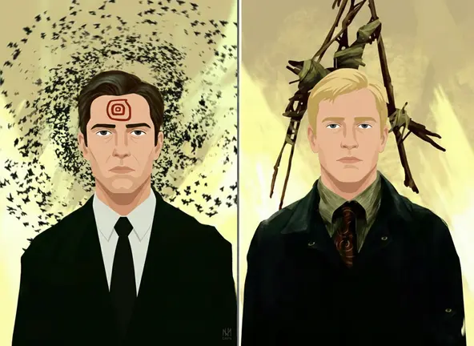

Inicié este año retomando el encuentro con mis queridos pacientes. En la primera sesión de este ciclo, una paciente compartió conmigo una preocupación que la inquietaba profundamente: el temor por la integridad física de su hermano. Le asustaba la idea de que él pudiera involucrarse en una pelea por defenderla; ella, desde una sensibilidad casi maternal, buscaba evitarle cualquier daño.
En ese momento, como terapeuta, me vi ante la disyuntiva de ofrecer un consuelo superficial o explicar la realidad de nuestra psique. Opté por lo segundo y le dije:
"Es difícil de comprender para las mujeres, pues ustedes poseen una agudeza excepcional para leer las emociones y siempre buscan evitar el sufrimiento de quienes aman. Es, de hecho, una de las cualidades que más admiramos los hombres en ustedes.
Sin embargo, en el mundo de lo masculino, el conflicto a veces se zanja de otra forma. Una pelea, unos cuantos golpes, y el asunto termina; para bien o para mal, ahí concluye. Nosotros no disfrutamos el dolor, pero el acto de proteger a las mujeres de nuestro entorno es lo que nos permite vivir en paz con nosotros mismos."
Si algo les sucediera y no estuviésemos allí para cuidarlas, la vida se volvería insoportable; cargaríamos con una culpa eterna. Continué explicándole que, así como ella está dispuesta a postergar su propio orgullo por la felicidad de su hermano, él encuentra una de sus mayores gratificaciones en el acto de proteger.
El día que él reciba un golpe por defenderla —un agravio que quizás ella ni siquiera llegue a notar o del cual él nunca se queje—, ese día, él se sentirá plenamente hombre.
La respuesta y el cierre
Ella me escuchó con atención y, entre risas y una visible tranquilidad, respondió: “Qué lindo lo que dijiste... seguramente ni del ojo morado me enteraré”.
Concluí recordándole que, si ella comparte su dolor con él, su hermano se sentirá honrado de acompañarla. Aunque no lo exprese con palabras, en su fuero interno, sentirá que está cumpliendo con su propósito frente a las mujeres que ama.